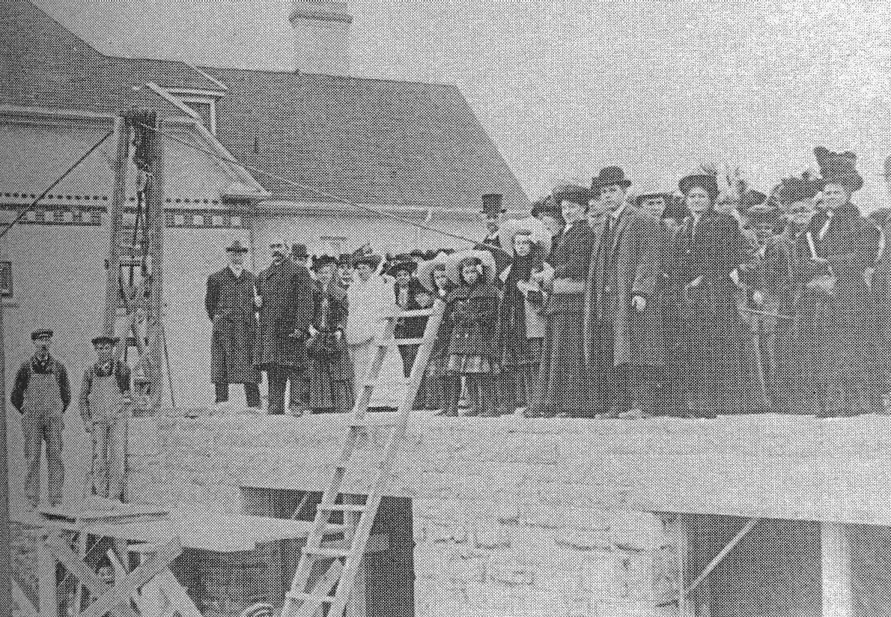

-1-MasterItem.svg)
Stories of Westminster United Church & its People / Page
59
The Christies and The New Building
When David Christie arrived in Westminster in 1909 he found himself leading a
congregation
firmly in favour of a mooted new union of Canadian churches. Discussion between
Presbyterians,
Methodists and Congregationalists with a goal of eventual union had started in
the 1890s. (See note
at end of the article concerning union and these three Protestant
denominations.)
David would probably have been well aware of these matters while still in
Scotland, He had more
than one friend in the Canadian Presbyterian Church and would have been in
communication with
these people for some time. David was fully amenable to these pending changes.
Personal involvement in matters of Union was not the only new experience for
him. His congregation
had outgrown the building they were in at Notre Dame and Charlotte. By 1910
discussions were
underway to identify a new site with a larger building. David joined an “action”committee which
included Messer’s Crowe, Mitchell, Gray and Harstone from the congregation.
Discussions took place between the committee and Knox and St. Stephan’s Presbyterian churches
and with Winnipeg Presbytery regarding a new location. On March 24th Presbytery
approved the new
site on Maryland Street at Buell.
An architect was appointed, John Russell, to create a large church building. By
the end of 1910, the
basement of the building was dug, the foundations set in place and structural
work up to the first
floor completed. Shortly thereafter a second site was purchased
on Maryland north of the church site. This was eventually
to become the location of the manse.
By April 29th, 1911, the corner stone was ready to be laid.
A crowd of over 2000 gathered for the occasion. The Governor
General of Canada, Earl Grey, was present to officiate. The band
of the 100th Winnipeg Grenadiers was also present to add a touch
or ceremony. During the laying of the stone Earl Grey made
a restrained joke: “… the absence of sectarian prefix perhaps
Table
of Contents

Rev. DAvid christie